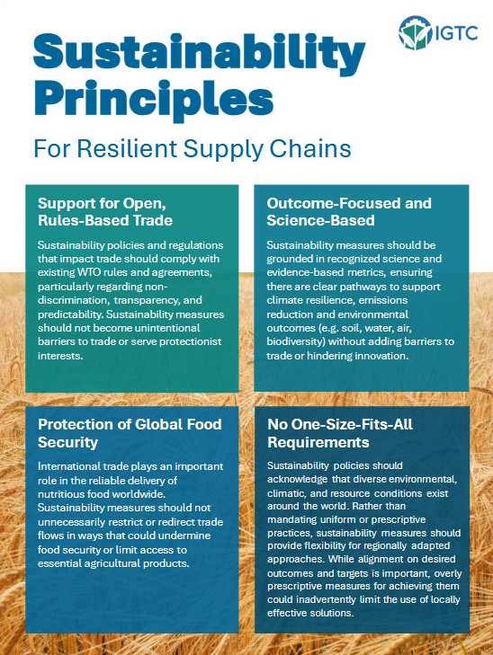
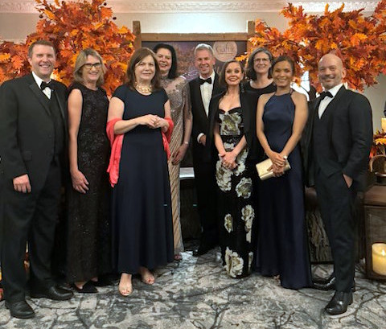

Upcoming Events
- IGTC General Assembly in Sao Paulo, Brazil – November 17–18
- Fall engagement in Brussels/Geneva – Date TBD (Sept/October)
- African Grain Trade Summit 2025 in Zanzibar – October 2–5

Sustainability Principles Launched
IGTC Strategy Session Tackles Trade Challenges and Future Priorities
IGTC Front and Centre at London Grains Week
Presentation to International Grains Council General Session
Presentation to Asia-Pacific Dialogue on Plant Breeding Innovation
Indonesia Clarifies Halal Status of GM Corn
Study of Global Grain Industry Suggests "Fierce" Competition
In global trade discussions, a number of governments are promoting the use of trade policies to advance environmental goals. At the WTO and OECD, there's ongoing dialogue about integrating climate and sustainability objectives into trade frameworks, while new bilateral and regional trade agreements have included full chapters addressing these issues.
For the grain trade, this raises important questions about market access. New expectations could emerge around supply chain documentation, environmental compliance, and domestic production practices.
To help ensure that grain trade perspectives are reflected in these conversations, IGTC has developed a set of seven Sustainability Principles. The document provides a practical reference point for engagement with governments and institutions, grounded in science-based approaches, regional flexibility, and support for predictable, rules-based trade.
IGTC is sharing the principles directly with key international bodies including the WTO, FAO, and OECD, and has invited members to do the same in their national contexts. A LinkedIn campaign and media outreach are also underway to raise visibility and foster dialogue across the value chain.
Download the principles here and share with your networks.
On June 9, IGTC hosted its annual strategy session during London Grains Week, drawing industry leaders together to examine near-term risks and long-range priorities for the global grain trade.
Veteran traders Milan Shah (Legumology), Fernando Jarach (LDC), and Brian Arnold (The DeLong Co.) opened the discussion with reflections on current operational challenges. They cited geopolitical instability, volatile freight conditions, and increasingly fragmented regulations as top concerns. The panel also flagged shifting currency dynamics, including the rise of non-dollar payment systems, as a development that could reshape trade flows over time.
Dr. Edwini Kessie, Director of the WTO’s Agriculture and Commodities Division, joined the session to share insights on the future of the multilateral system. While acknowledging the WTO’s challenges, he reaffirmed its foundational principles and invited IGTC to deepen collaboration on non-tariff barriers and technical issues. With the next Ministerial Conference set for March 2026 in Cameroon, the timing offers an important opportunity for engagement.
Discussion also turned to the EU’s evolving agricultural strategy, where speakers pointed to a renewed focus on reciprocity - the idea that imports should meet EU standards for sustainable farming. IGTC will coordinate with COCERAL on the upcoming consultation and is considering further engagement in Brussels this fall.
John McMurdy of CropLife International provided a global update on biotechnology and trade, noting continued growth in GMO cultivation and the increasing complexity of regulatory timelines. The session underscored the value of closer coordination between seed and grain sectors to support common objectives around regulatory alignment and market access.
IGTC’s Non-Tariff Barriers Working Group, chaired by Rosemary Richards (GTA), outlined three strategic focus areas: growing unpredictability in trade, the expanding role of sustainability requirements in market access, and the EU’s regulatory vision and its implications for exporters.
The session concluded with broad support for IGTC to strengthen its role in international advocacy and ensure grain trade realities are clearly understood by policymakers.
London Grains Week offered strong visibility for IGTC across multiple platforms, in addition to the Coalition’s own strategy session. Management Council members joined WTO’s Edwini Kessie on stage at the International Grains Council Conference to explore how collaboration between industry and multilateral institutions can help safeguard the trade flows essential to global food security.
Later in the week, Rosalind Leeck (USSEC) represented IGTC on CropLife International’s panel on “Productivity Gaps and Policy Drivers That Exacerbate Them.” The conversation reinforced the importance of regulatory alignment to ensure that farmers can access the tools and technologies they need to meet rising demand.
IGTC members also participated in a focused dialogue with Koen Dillen, Head of Unit at DG AGRI, on the EU’s Vision for Agriculture and Food 2040. The exchange highlighted the value of risk-based approaches and the need for meaningful consultation with trade partners. Special thanks to Iliana Axiotiades of COCERAL for hosting.
A warm thank you as well to CropLife Canada for hosting IGTC members and some key stakeholders for dinner following the strategy session. And of course, no London Grains Week would be complete without the Gafta Annual Dinner, which brought together more than 500 guests at the InterContinental Park Lane for an evening of conversation and celebration.
On June 12, IGTC President Pat O’Shannassy participated in the International Grains Council (IGC) General Session in London. The IGC holds two major sessions each year: one in January (attended this year by IGTC Managing Director Krista Thomas) and another in July as part of London Grains Week. IGTC is recognised by the IGC as an NGO Observer.
With over 15 countries in attendance, Pat delivered two presentations to delegates. The first emphasised the importance of certainty and rules-based trade for the movement of grain and global food security. IGTC highlighted the impact and growing incidence of non-tariff trade measures, and how these create costs and risk that ultimately translate into either higher prices for consumers or lower prices for farmers, usually the very people governments are working to protect.
In the second presentation, Pat introduced IGTC’s seven sustainability principles, which IGTC encourages governments to consider when developing sustainability programs and regulations. IGTC noted that trade and sustainability are not opposing forces, but when approached with a focus on outcomes and practical implementation, the two can be complementary in advancing broader sustainability goals.
The IGC is an important global forum, where IGTC’s relationships and solid reputation allow it to bring issues important to IGTC members to the global grain and food discussions.
IGTC President Pat O'Shannassy met with the China National Association of Grain Sector (CNAGS) in early July for an exchange on shared priorities. The discussion underscored the importance of global grain trade and the critical role that open markets play in supporting food security worldwide.
IGTC Managing Director Krista Thomas delivered a virtual presentation at a Regional Plant Breeding Innovation Consultation, organised on July 8 in Kuala Lumpur by the Asia and Pacific Seed Alliance. The event brought together regulators from 14 countries to exchange views on gene editing regulatory frameworks.
If key export markets adopt different exemptions for gene editing under their GMO laws, the result could be a fragmented and unpredictable trade environment. Early coordination among regulators is critical to avoiding unnecessary barriers and ensuring that innovations can be safely and efficiently traded across borders.
Krista shared a grain trade perspective, drawing on IGTC's key messages to highlight that global food security depends on the efficient movement of grain in high-volume, bulk shipments. She emphasized the importance of regulatory alignment to support innovation and trade, noting that new technologies such as plant breeding innovation require coherent, globally compatible rules to realise their potential for increased productivity and improved food security.
Follow-up discussions will take place in IGTC’s NTB Working Group.
Recent news coverage from Indonesia suggests genetically modified (GM) corn has been placed on the halal “positive list”, exempting it from certification requirements.
New halal regulations will take effect in October 2026, requiring all food and beverage products sold in the country to obtain certification. Indonesia is the first country to mandate halal certification for non-meat products, although minimally processed items like grain continue to be exempted. For GM commodities, it has been unclear whether they would be treated like their conventional counterparts or subject to certification.
Indonesia is one of the world’s largest grain importers and home to the fourth-largest population globally. While the reporting mentions only corn, it shows that GM products may be eligible for inclusion on the “halal positive list”. This means products would be exempt from facility inspections, product testing, documentation review, and other certification steps.
The IGTC NTB Working Group is monitoring Indonesia’s halal requirements and other emerging issues affecting grain trade.
A new study in Applied Economic Perspectives and Policy finds that global grain trade is less concentrated than previously assumed. The industry has seen growth by new entrants forming a viable competitive fringe, and firms fall into three broad clusters based on their scale and geographic scope. Overall, competition in international grain trading is described as “fierce.”
During the WTO’s Trade and Environment Week which ran June 30 through July 4, the EU presented updates on the Carbon Border Adjustment Mechanism and the EUDR. All presentations from the week are available to stream here.
Also, Pakistan’s Ambassador Ali Sarfraz Hussain took over as Chair of the WTO agriculture negotiations in April 2025. With the March 2026 Ministerial Conference (MC14) approaching, members are exploring achievable outcomes to sustain momentum in the multilateral system. Consultations will continue through summer 2025, with a critical stocktaking session in the fall expected to clarify what might be delivered at MC14. Ambassador Hussain provides a more detailed update here.
Subscribe | Unsubscribe | Contact: secretariat@igtcglobal.org